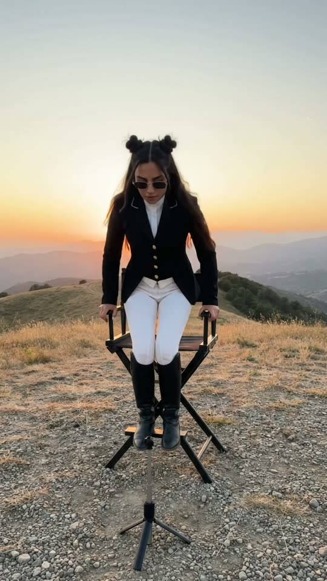
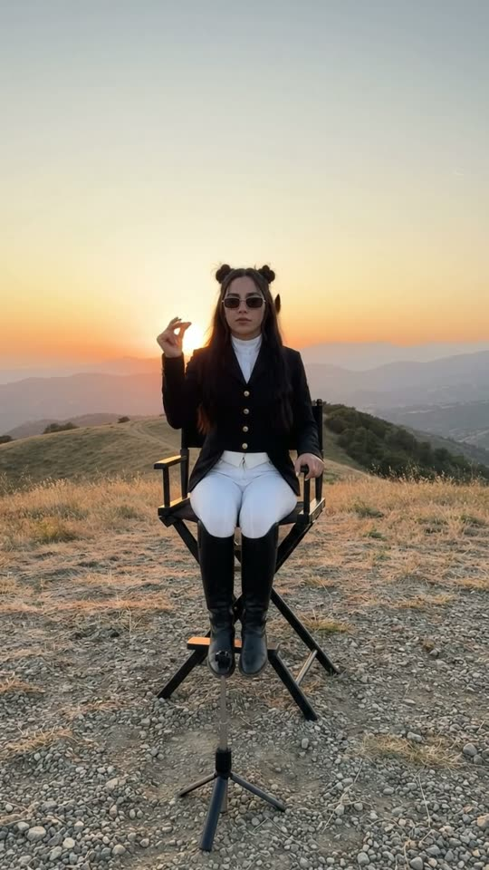
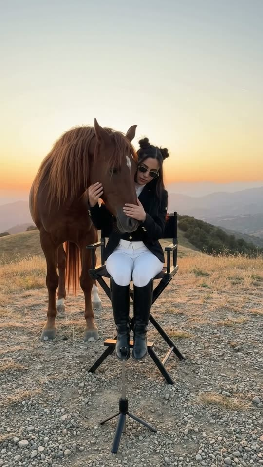

Free prompt pack
One snap.One horse.
Nobody walked a horse up a hill. One still image and one prompt that describes the shot second by second.
Two prompts, in the order I ran them. Copy them whole.
The first frame
She's already sitting down. This image is frame one. The woman, the chair, the hilltop and the light all come from it. The horse is not in it: it has to come up from behind the hill, not be there from the start.
Watch out
Leave the crest empty two metres behind the chair. That's where the horse comes from, so the model needs somewhere for it to hide.

The prompt 147 words
Photo of a bare hilltop of gravel and dry grass at sunset, taken from a tripod one metre off the ground, facing a young woman in the centre of the frame. She is just sitting down into a black canvas director's chair with black crossed legs, knees bent, both hands on its armrests. She has long straight black hair down to her waist with two small buns on top of her head, dark rectangular sunglasses, a fitted black equestrian show jacket with gold buttons, a white high-collared shirt, white riding breeches and tall glossy black riding boots. Two metres behind the chair the hilltop ends at a crest, and beyond it layers of mountains fade into golden haze far below. The sky is a smooth gradient from pale gold to deep orange. The low sun behind her rims her hair in red light. Natural colour, real photo.
The take
Ten seconds, written second by second. Add the image from step 01 as the reference, set 10 s, 9:16, 720p and audio on, and paste the prompt whole.
- 0–1 sshe sits down
- 1–2.3 sstill, wind in her hair
- 2.3–3 shand up, one snap
- 3.1–4.6 sthe horse rears up behind her
- 4.6–7 sit lands and walks round to her side
- 7–10 sshe strokes it and hugs its head
Watch out
Lock the camera. If it tilts up to follow the horse, the snap stops reading as the cause.
Fragments



The prompt 1326 words
FORMAT Real phone video, filmed from a small tripod, seen as the finished exported video file: the full picture edge to edge, nothing on top of it. One continuous take in real time, no cuts. Vertical frame. The video runs at 24 fps. No frame is repeated. Real time, 1x speed, never slow motion. SCENE On a bare hilltop at sunset, a young woman sits down in a director's chair, raises her right hand and snaps her fingers once. Right behind her, a huge chestnut horse rears up from behind the crest of the hill, towering over her with its long mane flying, comes down, walks round to her side, lowers its head to her, and she strokes its face and hugs its head. She is already sitting down in the first frame. The take ends with her hugging the horse's head against her cheek, both still. EXACTLY ONE WOMAN, ONE HORSE AND ONE CHAIR. REFERENCE IMAGE Use it for the woman, her clothes, the chair, the hilltop, the crest, the mountains, the sky and the light. The woman matches it exactly, zero drift, no smoothing. The horse is not in the image: it comes up from behind the crest at 3.1 s. The action is described below. THE WOMAN Early twenties, long straight black hair down to her waist with two small buns on top of her head, dark rectangular sunglasses that stay on the whole take, a fitted black equestrian show jacket with gold buttons, a white high-collared shirt, white riding breeches, tall glossy black riding boots. THE HORSE One adult chestnut stallion, about 600 kilograms, deep red-brown coat, an extremely long, thick, wavy mane falling past its neck and chest, a long full tail, dark hooves. The same horse from the moment it appears to the last frame. LOCATION MAP Our phone sits on a small tripod on the gravel, one metre off the ground, four metres in front of the chair, facing it straight on. Centre of the frame: the black director's chair, on the hilltop. Two metres behind the chair the hilltop ends at a crest and the ground drops away steeply out of sight; beyond, layers of mountains fade into haze far below, the horizon at mid-frame. Above: a clear sunset sky. The gravel foreground fills the bottom third of the frame. FIRST FRAME Already moving: the woman at x 40-60%, halfway down into the chair, knees bent, both hands on the armrests; her buns at y 28%, her boots on the gravel at y 74%; the crest behind her, empty; the hazy mountains and the orange sky behind. Instant read: a woman alone on a hilltop at sunset, sitting down to wait for something. No delayed reveal. OPTICS Main phone lens, wide, deep focus from the gravel to the mountains. The framing never changes. CAMERA — LOCKED OFF The camera is a phone on a small tripod, left recording. Nobody is holding it. The frame is completely locked for the whole take: no pan, no tilt, no zoom, no push in, no drift, no reframing. The chair's legs stand at the same spot at the bottom of the frame in the first second and in the last second, and the horizon stays at the same height. When the horse rears to the top of the frame, the camera does not tilt up to follow it. ACTION TIMING 0–1.0 s — She lowers herself into the chair, hands on the armrests, and sits up straight with her back against the canvas, then rests both hands on her knees. 1.0–2.3 s — She sits still, chin up; the wind lifts strands of her long hair and a thin drift of dust runs across the gravel. The crest behind her is empty. 2.3–3.0 s — She raises her right hand to shoulder height, thumb and middle finger pressed together, and at 3.0 s snaps her fingers once, crisp. Her hand stays up in the snap pose. 3.1–4.6 s — Right behind her, a chestnut horse rears up from behind the crest: first its ears and head rise above her head, then its neck, chest and folded forelegs, until it stands fully reared on its hind legs, its head near the top edge of the frame, its long mane flying. Two low clouds of dust roll out along the ground on both sides of the chair. 4.6–5.6 s — It comes down onto its forelegs behind her, hooves hitting the gravel, dust puffing up to her knees. She does not move and does not turn round. 5.6–7.0 s — The horse turns behind her and walks round the frame-left side of the chair, three heavy steps, until it stands beside her at frame-left, its shoulder level with her head, facing the camera. 7.0–8.0 s — It lowers its huge head toward her; she lowers her right hand and strokes its nose. 8.0–10 s — She wraps both arms around its head and rests her cheek against its face; the horse closes its eyes; its mane falls across her shoulder. Both stay like that to the last frame. PHYSICS AND SCALE The horse has real weight: when it rears, its hind legs bend under it and its body rises in one heavy push; when it comes down, its forelegs take the weight and the gravel jumps. Reared, it is almost twice as tall as the chair with her sitting in it. It walks one hoof at a time, never floating. Its hooves never touch her or the chair. The chair never moves. She stays seated from 1.0 s to the end, never stands up, never turns to look behind her. The dust stays low and settles. Nothing morphs; the woman and the horse stay the same. LIGHTING Sunset. One light source: the low sun just behind the mountains, behind her: warm golden backlight that rims her hair and the horse's mane in glowing red-orange; her front and the horse's face in soft warm shade, still clearly visible. The sky glows from pale gold at the top to deep orange at the horizon. No other light. AUDIO No music, no score, no narration, no subtitles. Phone microphone outdoors: a steady wind across the hilltop, the creak of the canvas chair as she sits, a single crisp finger snap at 3.0 s, then hooves scrambling on gravel and a loud whinny as the horse rears, heavy hooves landing, dust hissing, slow hoofbeats as it walks round, a deep snort and soft breathing as it lowers its head. Nobody speaks. LOOK Real phone video, seen as the finished exported file: deep depth of field like a small phone sensor, no cinematic bokeh, slight over-sharpening, a little noise in the shadows, the sky slightly clipped at the brightest point. No camera app interface: no shutter button, no gallery thumbnail, no record button, no icons, no timer, no zoom buttons, no frame lines, no recording dot. No colour grade, no teal-and-orange, no film grain, no lens flare, no slow motion, no cuts. The horse is a photoreal living animal. NO FULL-FRAME EVENTS The dust stays below her knees and never covers her or the chair; the woman, the chair and the sky are visible at every moment. The sun never flares across the frame. No flash, no fade, no blur used as a transition. POSITIVE LOCKS Exactly one woman, one horse and one chair, the same in every frame. She keeps her sunglasses on and stays seated from 1.0 s to the end. The horse appears only once, from behind the crest, and never disappears. The camera stays where it is, with the same framing from the first frame to the last. No captions, no subtitles, no on-screen text, no watermark, no logos, no letters anywhere, no camera app interface, nothing on top of the picture. ONE FIXED PHONE. ONE WOMAN. ONE CHAIR. ONE HORSE. ONE SNAP. NO CUTS. NO CAMERA MOVE. NO INTERFACE. NO SLOW MOTION. NO MUSIC.
Rule 01
Hide the horse
Give it a place to come from: a crest right behind the chair. Without one, the model puts it in from frame one.
Rule 02
She never turns
Write that she stays seated and never looks back. Her calm is what makes the snap the cause.
Rule 03
Nothing on screen
Say it's the finished video file, not the camera app, or you get a shutter button burned into every frame.
That's the whole build
Now go snapsomething.
If yours works, send it over. I read every DM and the good ones end up on the account.
@martiiifons